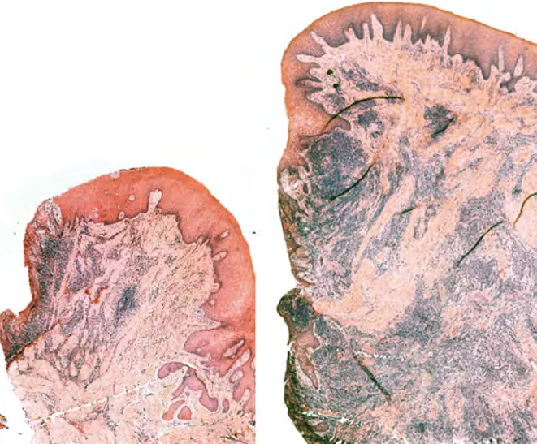
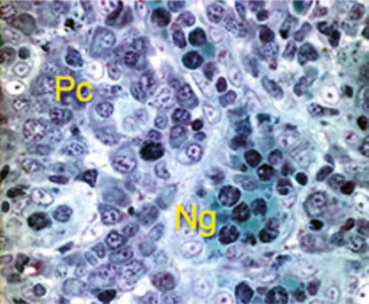

نسخه استخراجشده؛ ترجمه یا تأیید علمی انجام نشده است. وضعیت: captured
در درس قبل دیدی که مسیر بیماری در ایمپلنت و دندان مشابه است. حالا ببین ضایعه چقدر متفاوت است.
یافتهی اول — اندازه. «بررسی هیستولوژیک نشان داد که ضایعات پریایمپلنتیت بیش از دو برابر بزرگتر از ضایعات پریودنتیت بودند.»
در بررسی ۱۲ ضایعهی پریایمپلنتیت انسانی هم ضایعهها بسیار بزرگ بودند؛ ارتشاح التهابی همواره تا ناحیهای اپیکالتر از اپیتلیوم پاکت میرسید و بخش اپیکال ضایعه اغلب به بافت استخوان میرسید. در مدل حیوانی هم «محلهای پریایمپلنتیت ضایعات التهابیای را نشان دادند که بزرگتر بودند و نزدیکتر به کرست استخوانی امتداد مییافتند تا آنهایی که در پریودنتیت دیده میشد.»
یافتهی دوم — چگالی سلول التهابی. در بیوپسی شش بیمار با پریایمپلنتیت، «۶۵ درصد از بخش بافت همبند توسط سلولهای التهابی اشغال شده بود.»
یعنی حدود دو سوم بافت همبند را سلول التهابی پر کرده است.
یافتهی سوم — و مهمترین تفاوت ساختاری:
نتیجه: «ضایعات پریایمپلنتیت ضعیف محصور شدهاند (poorly encapsulated)، تا بافت استخوانی مارجینال امتداد مییابند، و در صورت اجازهی پیشرفت، ممکن است به از دست رفتن ایمپلنت بینجامند.»
و جزئیاتش: «ارتشاح سلول التهابی در پریایمپلنتیت تا موقعیتی اپیکالتر از اپیتلیوم پاکت امتداد یافته بود و در جهات اپیکال و جانبی کمتر از ضایعات پریودنتیت دیوارهکشی شده بود.»
چرا این حیاتی است؟ در پریودنتیت، ضایعه دیوارهکشی میشود و میان آن و استخوان معمولاً نواری حدود ۱ میلیمتر از بافت همبند غیرملتهب میماند. در پریایمپلنتیت، این دیواره ضعیف است — و ضایعه در بیشتر موارد تا استخوان میرسد.
این تفاوت ساختاری کمک میکند بفهمیم چرا پیشرفت پریایمپلنتیت سریعتر از پریودنتیت بهنظر میرسد، حتی وقتی عامل شروع یکی است.

تکنیکهای ایمونوهیستوشیمی برای مقایسهی ترکیب سلولی این دو ضایعه به کار رفتند. بیوپسیها از ۴۰ بیمار با پریایمپلنتیت پیشرفته و ۴۰ بیمار با پریودنتیت شدید گرفته شد — از محلهایی با عمق پروبینگ ۷ میلیمتر یا بیشتر، خونریزی هنگام پروب، و از دست رفتن آشکار استخوان.
یافتهها:
• «چگالی سلولهای پلاسما، گرانولوسیتهای نوتروفیل و ماکروفاژها بهطور قابلملاحظهای در پریایمپلنتیت بیشتر از پریودنتیت بود.»
• در مدل حیوانی: «ضایعات در پریایمپلنتیت نسبتهای بزرگتری از گرانولوسیتهای نوتروفیل و استئوکلاستها نسبت به ضایعات پریودنتیت داشتند.»
به استئوکلاست دقت کن — سلولی که مستقیماً استخوان را تحلیل میبرد. نسبت بیشتر استئوکلاست یعنی تحلیل استخوان فعالتر است.
و الگوی سیتوکاینی که ظریفتر است:
در پژوهش دیگری: «تعداد سلولهای مثبت برای اینترلوکین-۱ آلفا و اینترلوکین-۶ در پریایمپلنتیت بزرگتر و تعداد سلولهای مثبت برای فاکتور نکروز تومور آلفا کوچکتر از پریودنتیت بود.»
یعنی تفاوت فقط «بیشتر یا کمتر التهاب» نیست؛ الگوی التهاب متفاوت است — دو سیتوکاین بالاتر و یکی پایینتر.
و حالا مهمترین یافتهی این درس:
«تعداد زیاد نوتروفیلها در ضایعهی پریایمپلنتیت و نبود یک پوشش اپیتلیالی میان ضایعه و بیوفیلم، نشان میدهد که ضایعات پریایمپلنتیت ویژگیهایی متفاوت از ضایعات پریودنتیت دارند.»
نبود پوشش اپیتلیالی میان ضایعه و بیوفیلم. این را با آنچه دربارهی پاکت پریودنتال میدانی مقایسه کن: آنجا اپیتلیوم پاکت — هر چقدر هم زخمی — یک لایهی جداکننده میان بیوفیلم و بافت همبند است.
در بخش اپیکال ضایعهی پریایمپلنتیت، این لایه وجود ندارد و بافت همبند ملتهب مستقیماً با بیوفیلم روی سطح ایمپلنت تماس دارد.
و اگر این سه یافته را کنار هم بگذاری، تصویر کامل میشود: ضایعه بیش از دو برابر بزرگتر است، ضعیف محصور شده، و در بخش اپیکالش هیچ لایهای آن را از بیوفیلم جدا نمیکند. سه یافته که نشان میدهند ضایعهی پریایمپلنتیت با ضایعهی پریودنتیت یکی نیست.
و یک هشدار روششناختی صادقانه: «در حالی که اطلاعات دقیقی دربارهی هیستوپاتولوژی پریودنتیت انسانی وجود دارد، تعداد مطالعات روی ضایعات پریایمپلنتیت در انسان در حال افزایش است ولی در مقایسه کوچک باقی میماند.» — یعنی این تصویر هنوز در حال کامل شدن است.

نوع سؤال: ساخت کلمه · 7 خانه
حروف منبع: ه · ل · ب · ا · ت · ا · ی